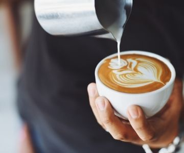
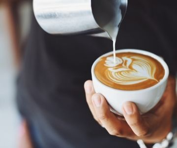

Here coffee is just the beginning...
Each L’OR capsule is an opportunity to indulge your senses and experience unique experiences. We seek the balance between smooth and intense flavors, the pleasure of the striking aroma and the elegance in the crema layer so that you can discover new sensations in each cup. Discover blends that will deliver a Masterpiece in flavor through the L'OR Online Store.
About
Created in France in 1992, the L'OR brand has always offer the best coffee in the world. Since then, Café L'OR has focused on quality and has seduced our senses by the intensity of its stimulating and refined aroma, with carefully selected grains. In 2010, L'OR became a worldwide brand with the launch of L'OR Espresso, the first coffee capsule compatible with coffee machines Nespresso®*.
Today, the very high quality of L'OR can be enjoyed in cafes in capsules available in the most varied blends that offer a unique experience with every cup. In addition to coffee in capsules, check also roasted and ground coffee, coffee beans, soluble coffee and our coffee accessories.
L'OR was created to offer you the best coffee in the world. Discover the sophistication of our coffee blends and let yourself be seduced by the balance of smooth and intense flavors. Discover L'OR, Artwork prime in flavor.
 


Adress
Avenue Brigadeiro Faria Lima - 444 - São Paulo, SP
Contact
Telefone: (51) 9-9999-9999
E-mail: contato@codecafe.com
Horário de atendimento:Segunda a Sexta - 9h até 18h